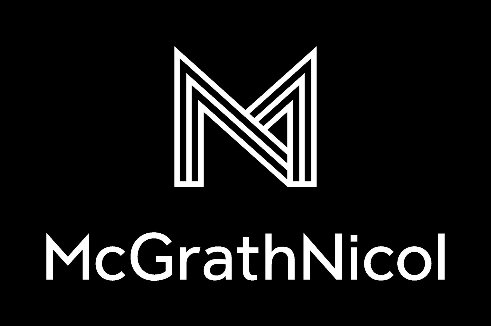

Abstract
Biometric authentication has emerged as a cornerstone technology for secure identity verification, with growing importance in mobile security, border control, and banking. However, biometric systems face significant security and privacy challenges, including spoofing attacks, privacy preservation, and template protection. This workshop will bring together researchers and practitioners to discuss recent advancements, challenges, and emerging trends in biometric authentication and security. The event aims to facilitate interactions among academics, industry professionals, and policymakers, fostering interdisciplinary collaboration.
Topics of Interest
- Bio-cryptography
- Biometric authentication techniques and methods
- Spoofing attack detection and prevention
- Privacy-preserving biometric authentication
- Secure biometric template protection and encryption
- Multimodal biometric systems
- Machine learning and deep learning in biometric security
- Applications of biometrics in mobile security
- Biometrics for border control and surveillance
- Ethical and legal implications of biometric security
- Emerging biometric technologies
Important Dates
- Submission Deadline: November 19, 2025
- Notification of Acceptance: November 30, 2025
Organizers and Contact
-

Dr Shabnam Kasra Kermanshahi
University of New South Wales, Australia
(s.kasra_kermanshahi@unsw.edu.au) -

Dr Wencheng Yang
University of Southern Queensland, Australia
(wencheng.yang@unisq.edu.au) -

Prof Jiankun Hu
University of New South Wales, Australia
(jiankun.hu@unsw.edu.au)
Program Committee (Tentative)
- Prof Jiankun Hu (UNSW, Australia)
- Dr Shabnam Kasra Kermanshahi (UNSW, Australia)
- Dr Wencheng Yang (UniSQ, Australia)
- Dr Xu Yang (Minjiang University, China)
- Dr Taotao Cai (UniSQ, Australia)
- Dr Xuefei Yin (Griffith University, Australia)
- Prof Patrizio Campisi (University of Roma Tre, Italy)
- Dr Yanming Zhu (Griffith University, Australia)
- Dr Ming Wang (University of Canberra, Australia)
Keynote Presentation
John Karabin
Title: Cryptography and Biometrics: Past, Present, and Future
Speaker: John Karabin
This talk will explore the evolution of two transformative technologies from the 1980s to today. I’ll examine how modern cryptographic algorithms and platforms have advanced, and how biometrics transitioned from classified research labs to everyday use on mobile devices. The discussion will highlight the growing convergence between these fields, the widespread adoption of both technologies, and the regulatory frameworks shaping their use. Finally, we’ll look ahead to predict emerging trends and challenges that may define the next chapter in cryptography and biometrics.
BIO: John Karabin is a seasoned cybersecurity expert with over 30 years of experience across government and commercial sectors in Australia, New Zealand, and the Asia-Pacific. He specialises in cyber risk management, governance, and strategic planning, helping organisations build resilience and align security with business objectives. John has led transformative projects, regularly advised boards and executives, and contributed to national security initiatives including the Security of Critical Infrastructure Act (SOCI). A passionate industry advocate, he volunteers with AISA and formerly mentored over 30 startups as a board member of Cyrise. In his spare time he is an active member of the NSW Rural Fire Brigade.

Pouya Ghotbi
Title: Dark Web to Deepfakes: Defeating Biometric Authentication
Speaker: Pouya Ghotbi
Biometric authentication faces a sophisticated adversary ecosystem operating with industrial efficiency. This talk exposes underground infrastructure defeating facial recognition, fingerprint scanners, and multi-modal systems through attack commoditization, data trafficking, and adversarial machine learning. Dark web marketplaces offer deepfake generation for $20 and injection tools bypassing liveness detection entirely. This "Bypass-as-a-Service" economy enabled 1,100+ deepfake attacks against Indonesian financial institutions and 1,100% fraud surges in 2025. Underground marketplaces document $17.3 million in biometric data sales across 720,000+ transactions. Unlike passwords, compromised biometrics create permanent vulnerability. Technical analysis covers injection attacks feeding synthetic data into authentication pipelines, adversarial ML reducing system accuracy from 99.5% to 1%, and deepfakes generating artificial liveness cues. Real-world case studies include Singapore SingPass exposure and recent financial compromises. Attendees gain intelligence-driven threat modeling incorporating actual adversary capabilities and defensive strategies addressing the core challenge: attackers innovate faster than defenders deploy countermeasures.
BIO: Pouya Ghotbi is a seasoned cybersecurity strategist with over 20 years of experience shaping how organisations protect, detect, and respond in an increasingly AI-driven world. He focuses on cloud security, AI security, and modern SecOps, translating complex concepts into clear and actionable strategies that deliver results. Pouya is known for his direct and practical approach, and for challenging assumptions that hold security teams back. His sessions explore the intersection of technology, intelligence, and human judgement, revealing how practical security thinking can turn chaos into control.
Submission
The workshop welcomes submissions under two streams:
Stream One – Peer-Reviewed Papers for Special Issue
Papers submitted to this stream will undergo peer review by the workshop. Accepted papers will have non-archival proceedings but may be recommended for submission to the Special Issue on Biometric and Cryptographic Techniques and Their Applications in Sensor Data and Network Security (Special Issue Link) in Sensors. Special APC discounts may be available for workshop submissions in collaboration with Sensors.
Stream Two – Presentations without Archival Publication
This stream includes presentations of previously published papers, abstracts, work in progress, and industrial contributions. Accepted submissions are non-archival, allowing authors to later submit their work to venues with formal archival proceedings.
Due to the small number of submissions this year and to encourage participation in our workshop, the panel decided that after a desktop review, any paper whose topic fits within the workshop’s scope will be accepted for presentation without undergoing peer review. Authors who wish to pursue the Stream One pathway are warmly encouraged to submit extended versions of their papers directly to our Special Issue. As outlined in our agreement with the journal, all submissions to the Special Issue will undergo the journal’s independent review process. Please note that works presented at this workshop are considered non-archival, so authors are free to submit their papers to any other venue after the workshop.
Important Notes:
Non-archival proceedings: This workshop has no formal proceedings. Accepted papers, abstracts, work in progress and industrial contributions in both Stream one and two are non-archival, allowing future submission to venues with archival proceedings.
Submission Process
- Format: Springer LNCS.
- Length: No strict page limit; ~15 to 20 pages is encouraged, plus references and appendices.
How to submit: Submit your papers via Submission Port.
Authors of accepted papers in either stream are expected to present their work at the workshop.
Registration: Registration is mandatory for all accepted papers. Registration fee is $160 USD for this workshop. See the registration page for more information.
We look forward to your participation!
Workshop Schedule
9:00 AM – 9:10 AM — Opening Remarks; Dr Shabnam Kasra (UNSW)
Welcome, housekeeping, and workshop overview.
9:10 AM – 10:00 AM — Keynote Presentation
Keynote 1: John Karabin, “Cryptography and Biometrics: Past, Present, and Future”
10:00 AM – 10:30 AM — Talk 1
TEDxBC: Cross-Device Transfer Learning Using Keystroke Dynamics
First technical/session talk.
☕ 10:30 AM – 11:00 AM — Morning Tea
11:00 AM – 11:30 AM — Keynote Presentation
Keynote 2: Pouya Ghotbi, “Dark Web to Deepfakes: Defeating Biometric Authentication”
11:30 AM – 12:00 PM — Talk 2
May the Force not Be with You: Brute-Force Resistant Biometric Authentication and Key Reconstruction
Second talk of the session.
12:00 PM – 12:30 PM — Talk 3
A Tale of Two One-Way Functions in Cancelable Biometrics
Third talk of the session.
🍽 12:30 PM – 1:30 PM — Lunch